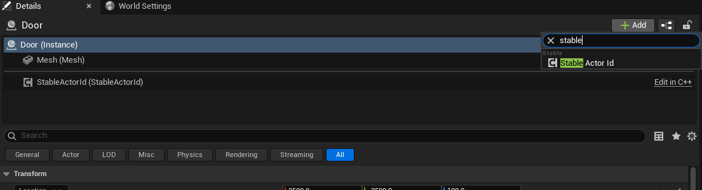
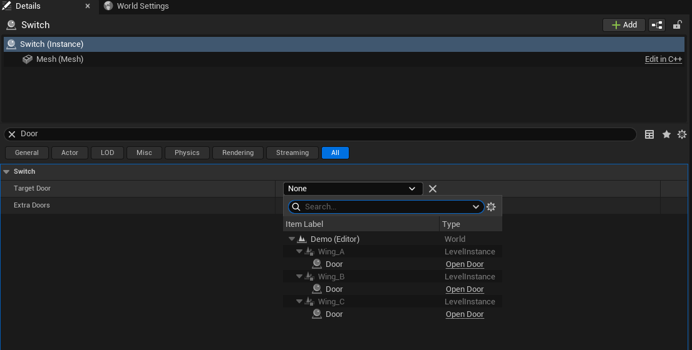
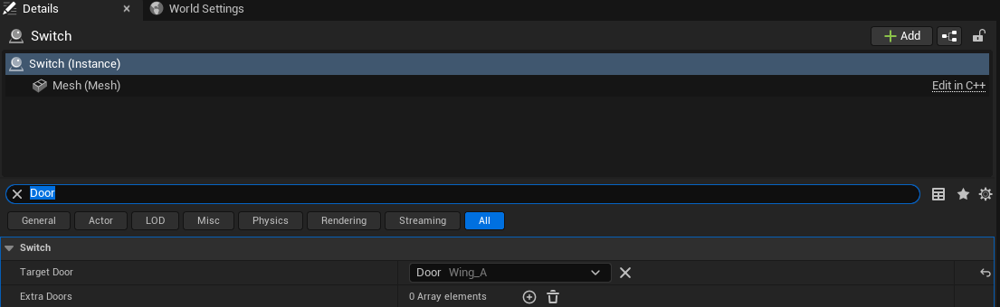
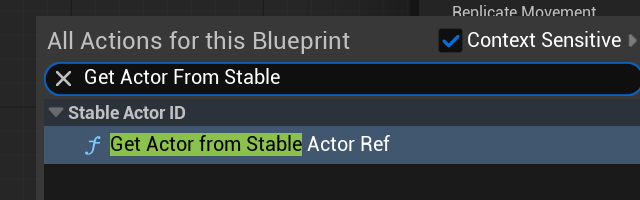
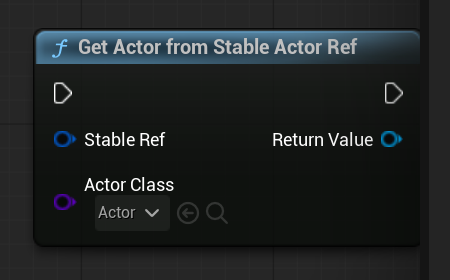
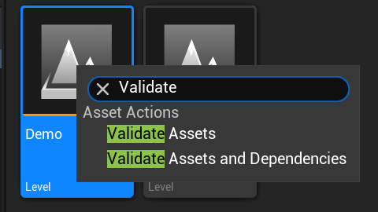
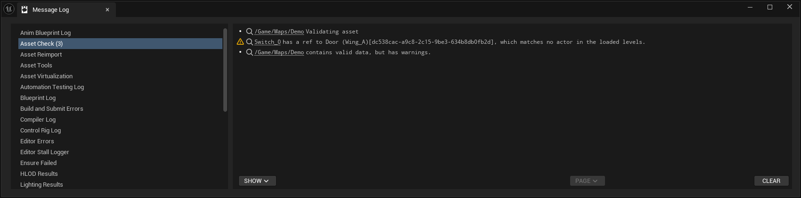
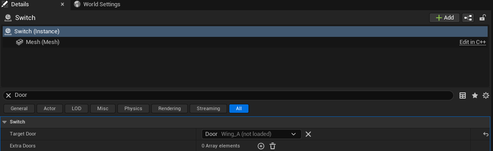

Before You Start
You need the plugin in your project's Plugins folder. It turns itself on.
There's nothing to enable. Everything below happens in the Unreal editor. The
screenshots come from a small demo level: a room with a door, placed three times, and a
switch in front.
One term comes up a lot. A level instance is a piece of a level you build once and place as many times as you like, the way you'd place a prop. Three copies of one room is three level instances of the same room.

Step 1: Tag The Door
Select the door and look at the Details panel. Click "Add" at the top and pick "Stable Actor Id". That's it. The door can now be pointed at.

If the door is a Blueprint, add the component there instead and every door you place
gets it. If you're on the engineering side, the component is
UStableActorIdComponent. The How It Works page
has the C++.
Step 2: Give The Switch Somewhere To Remember It
The switch needs a property of type "Stable Actor Ref". In a Blueprint, add a variable and choose that type. In C++ it's one line. Either way, the switch's Details panel gets a new row that starts out saying "None".

Step 3: Pick The Door
Click the dropdown. You get a list of everything in the level that has the tag, laid out the same way as the Outliner. Rooms you placed open up like folders. When the same room is placed three times you see three doors and can pick the one you mean.

Click a door and the row fills in. It shows the door's name first, and then, in dimmer text, the room it's in. If the switch and the door live in the same room, the ref is stored relative to that room. Every copy of the room then gets its own door.

The ✕ button clears it back to "None".
Step 4: Make The Switch Do Something
When the game runs, the switch asks the plugin for its door and gets the actual door actor back. In Blueprint that's the "Get Actor From Stable Actor Ref" node: feed it the ref, tell it what kind of actor you expect, and use what comes out. If the door isn't around yet, because its part of the world hasn't loaded, the node gives you nothing. Try again later.


In C++ it's UStableActorIdLibrary::ResolveStableActorRef<ADoor>(this, TargetDoor).
Step 5: Let The Editor Check Your Work
Right-click the level in the Content Browser and choose "Validate Assets". Anything that can't work gets listed in the Message Log, with the actor it's on. The common one is a switch whose door was moved to another level or deleted. The fix is the same every time. Open the dropdown and pick again.


What "Not Loaded" Means
In a big world, Unreal only keeps nearby parts loaded. When the door's part isn't loaded, the row still shows the door's name and room, and adds "not loaded" so you know the door exists but isn't in memory right now. That's normal.

If Something Looks Wrong
- The dropdown doesn't list my door
- The door is missing its tag. Go back to Step 1. If the property limits what kind of actor it accepts, the door has to be that kind.
- The row shows a long code instead of a name
- The ref points at something that no longer exists. Pick again.
- It worked in the editor but not in the packaged game
- Run Validate Assets first. If that's clean, check out the packaged builds section on the How It Works page.